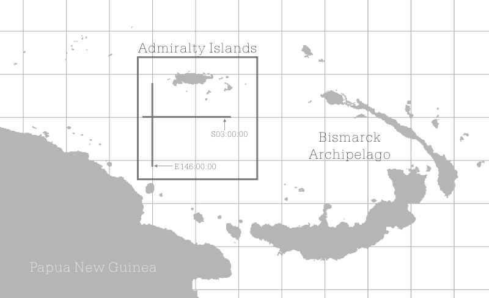
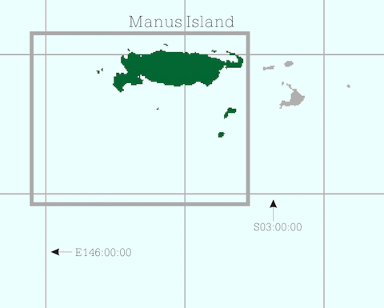

Butterfly Island Detailed Map
Butterfly Island Detailed Map
Large Area Map
The Butterfly Island is located in this map.
However, it is such a small island
included in the rectangle whose one side is 2km.
For finding this island, you have to magnify the map more.
Click the rectangle in the map in order to jump to the magnified map.

The Butterfly Island is located in this map.
However, it is such a small island
included in the rectangle whose one side is 2km.
For finding this island, you have to magnify the map more.
Click the rectangle in the map in order to jump to the magnified map.

Surrounding Map
This is a map where the inside of rectangle in the "Large Area Map" was magnified.
The Butterfly Island cannot be found yet.
The Butterfly Island is situated in Manus province of Papua New Guinea.
Manus province is composed of the Admiralty Islands.
The biggest island in the province is Manus.
Manus province was named from the name of this island.
The Butterfly Island is located in the south-southwest of the Manus island.
This is a map where the inside of rectangle in the "Large Area Map" was magnified. The Butterfly Island cannot be found yet. The Butterfly Island is situated in Manus province of Papua New Guinea. Manus province is composed of the Admiralty Islands. The biggest island in the province is Manus. Manus province was named from the name of this island. The Butterfly Island is located in the south-southwest of the Manus island.

Magnified Map
This is a picture where the inside of rectangle
in the "Surrounding Map" was magnified.
The image of Landsat is used after this instead of the map.
Pay attention in the lower left of the rectangle in this picture.
The Butterfly Island is in sight faintly.

This is a picture where the inside of rectangle in the "Surrounding Map" was magnified. The image of Landsat is used after this instead of the map. Pay attention in the lower left of the rectangle in this picture. The Butterfly Island is in sight faintly.
The Most Magnified Map
This is an expansion image of the rectangle
under the left in the "Magnified Map".
The butterfly island appeared at last.
The outline of the atoll looks like really a butterfly
that expanded the wing.
The long and slender island surrounded by
the vast leaf is visible to right-hand side.
In Japan, this island is known as the "Butterfly Island".
I want to know a true name (it is not the name Western people named freely
but the name which people of the actual place were using from ancient times).
class="left2"

This is an expansion image of the rectangle under the left in the "Magnified Map". The butterfly island appeared at last. The outline of the atoll looks like really a butterfly that expanded the wing. The long and slender island surrounded by the vast leaf is visible to right-hand side.
In Japan, this island is known as the "Butterfly Island". I want to know a true name (it is not the name Western people named freely but the name which people of the actual place were using from ancient times).